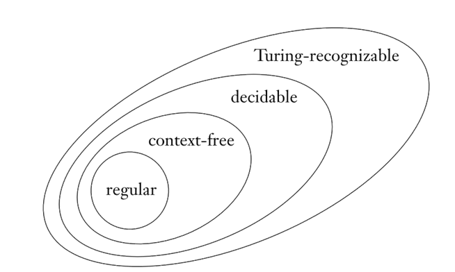

Homework 5
Last updated: Sun, 17 Oct 2021 13:04:23 -0400
Out: Mon Oct 18, 00:00 EST Due: Sun Oct 24, 23:59 EST
This assignment starts to explore Turing Machines.
Homework Problems
Not a Context-Free Language (6 points)
Turing Machine Config Sequences (2 + 2 + 2 + 2 = 8 points)
Turing Machines and Closed Operations (3 + 3 + 4 + 3 + 3 + 4 = 20 points)
Venn Diagram Correctness (3 + 3 = 6 points)
README (2 point)
Total: 42 points
Submitting
Submit your solution to this assignment in Gradescope hw5.
A submission must include a README containing the required information, in addition to the solution to the problems.
1 Not a Context-Free Language
Prove that the language
L = \left\{ D\mid D\textrm{ is a string representing a valid DFA}\right\}
is not a context-free language.
In this language, a string representation of a DFA is exactly as defined by the formal definition, where tuples are enclosed in parentheses characters, sets are enclosed with brace, and each component is separated with a comma. The transition function is defined as a set of triples Q\times\Sigma\times Q. All the other components—
Here is an example string in L: (\{q_0,q_{accept}\},\{0\},\{(q_0,0,q_{accept}),(q_{accept},0,q_{accept})\},q_0,\{q_{accept}\})
This is a valid DFA because the start state and accept states are drawn from the set of states and every state has transitions for every possible character in the alphabet.
(\{q_0,q_{accept}\},\{0\},\emptyset,q_0,\{q_{accept}\})
This is invalid because it does not have transitions for some characters in some states.
(\emptyset,\{0\},\{(q_0,0,q_{accept}),(q_{accept},0,q_{accept})\},q_0,\{q_{accept}\})
This is invalid because the transitions refer to states that are not in the set of states.
(q_0,\{0\},\{(q_0,0,q_{accept}),(q_{accept},0,q_{accept})\},q_0,\{q_{accept}\})
This is an invalid DFA because the set of states is not a set.
12345678910
This is an invalid DFA because it does not have any of the required components.
2 Turing Machine Config Sequences
Here is the example Turing Machine from class (it’s also Figure 3.10 in Sipser textbook):

Remember that transitions for any input characters that are not explicitly included goes to an implicit q_{reject} state. Also, if a transition does not specify a character to write, then the tape contents stay the same.
0
0##0
01#01
11#10
3 Turing Machines and Closed Operations
union
concatenation
complement
Additionally, explain why your solution for showing that complement is closed for decidable languages won’t work for showing that complement is closed for recognizable languages.
Hint: The complement of a set is the set of all elements no in the set.
union
concatenation
Additionally, explain why your solution for showing that DECODE is closed for recognizable languages won’t work for showing that DECODE is closed for decidable languages.
Each answer should be a short informal description of a Turing Machine, but remember that informal does not mean imprecise or incomplete. Answers must still be sufficiently precise so someone could reconstruct a formal machine if needed.
In particular, make sure to be careful with non-termination (when appropriate), and include a termination argument (when necessary)!
4 Venn Diagram Correctness
We’ve seen this Venn diagram in class many times:

But it is actually correct?
In Homework 4’s NFA->PDA problem, you proved correctness of one part of the diagram, by showing that every regular language is also context-free. Thus the oval for regular languages should be completely inside (i.e., it’s a subset of) the oval for context-free languages.
Now prove that the rest of the diagram is correct. Specifically:
Show that it’s correct for the "context-free" oval to be completely inside the "decidable" one.
Do the same thing for the "decidable" and "recognizable" ovals.
Make sure your answer is clear about any statement(s) being proved, assumptions, and previous theorems or definitions that are being used. Also, don’t forget a termination argument if it’s needed.
HINT: Are there previous theorems from our "library" that can help?